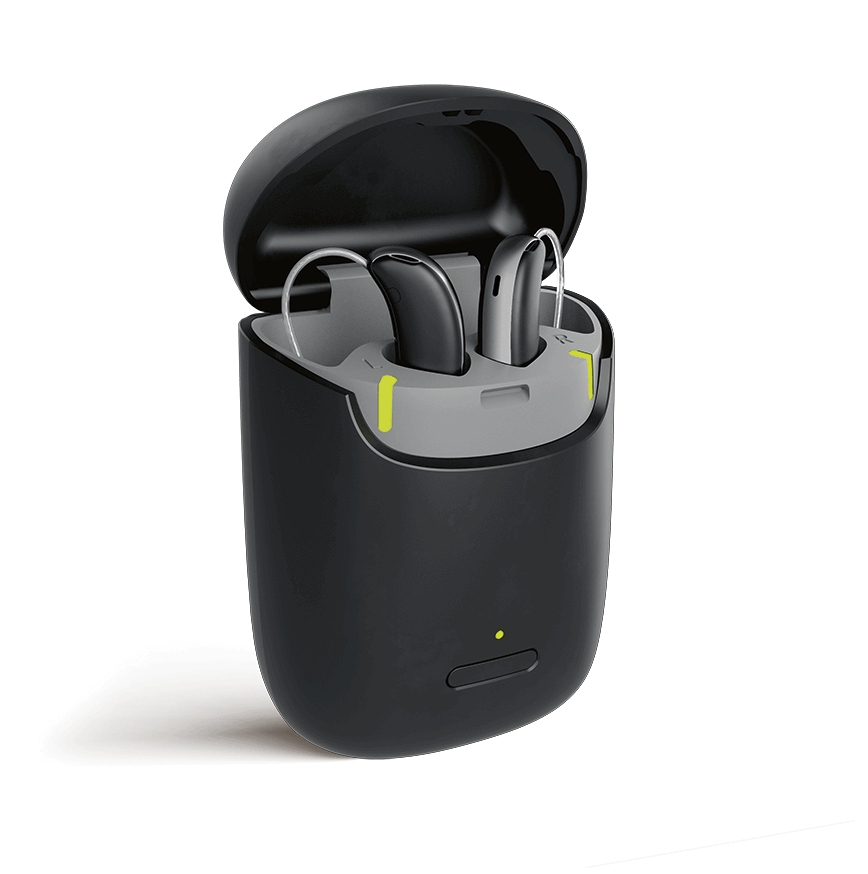

From medical necessity to life decision: How an integrated narrative architecture moved hear.com beyond awareness to engineer category-wide adoption for Horizon X.
hear.com users were actively visiting the website and completing hearing tests. Awareness was not the problem. Adoption was. Many users recognised their hearing difficulties but delayed treatment for years — sometimes decades.
Hearing aids carried the weight of association: ageing, disability, social stigma. The behavioural barrier was not ignorance. It was identity. Users understood the need but avoided the decision because accepting the device meant accepting a version of themselves they weren't ready for.
"The communication challenge wasn't awareness. It was self-identity."
The opportunity was to transform hearing care from a medical purchase into a personal life decision — and to position Horizon not as something that corrects a deficit, but as something that restores participation: in conversations, in daily life, in the moments that matter.
While hear.com was scaling across 11 countries including the US and Germany, the APAC region—specifically India—presented a unique challenge. We weren't just competing with other hearing aids; we were competing with a deep-seated cultural stigma. By 2021, my strategy shifted the focus from 'clinical correction' to 'digital lifestyle,' aligning the launch with a global move toward Tele-Audiology and premium hearables like the Horizon X.
I owned the full communication journey — from the first ad impression through to post-adoption onboarding — across every touchpoint and every team involved in bringing Horizon X to market.
"APAC was the fastest-growing segment by percentage, driven by the low-cost acquisition model in India and the high-tech adoption in South Korea."
We shifted communication entirely away from hearing loss and medical framing. The device was not introduced as a solution first. The user needed to feel seen before they could be moved.
The strategy was a four-stage communication sequence — each stage earning the right to the next:
The "Where Forever Young Begins" campaign repositioned Horizon X as a life decision rather than a medical prosthesis, a key driver in achieving 39% of total unit sales.
Positioning a: lifestyle improvement after acceptance, not treatment of a medical condition. The framing borrowed from how premium consumer technology — specifically AirPods — had been positioned: desirable, modern, quietly capable.
Recognized by TechCrunch & Forbes as the largest online platform for hearing care in the world.
While global retail saw a 30% decline during the pandemic, our focus on Tele-audiology allowed the APAC region to become the fastest-growing segment globally by percentage.

Design that redefined a category
The execution discipline was consistency. Performance ads, website messaging, consultation communication, onboarding, and call-centre scripts were all written as chapters in the same narrative — so a user moving from a social ad to a landing page to a consultation call never felt the message shift beneath them.
Performance ads focused on social moments and everyday conversations rather than symptoms or clinical outcomes. Website messaging reframed hearing care around relationships and daily experience. Consultation communication matched the warmth of the external brand to build trust and continuity. Onboarding communication reinforced ease-of-use and confidence at the most vulnerable moment — when a first-time user holds a device they're not sure about.
The Horizon X launch was the cornerstone of hear.com’s 2021 filing for a $2 billion IPO. By shifting the conversation to 'Life Decisions' rather than 'Medical Devices,' we helped position the company as the world’s largest online hearing-care provider.
The Horizon X launch was recognized by global business outlets as a definitive turning point for Direct-to-Consumer (DTC) medical devices and digital-first audiology.